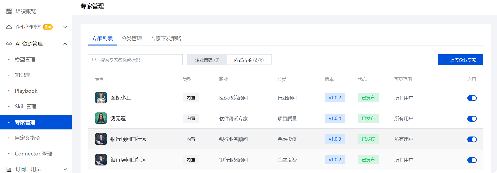
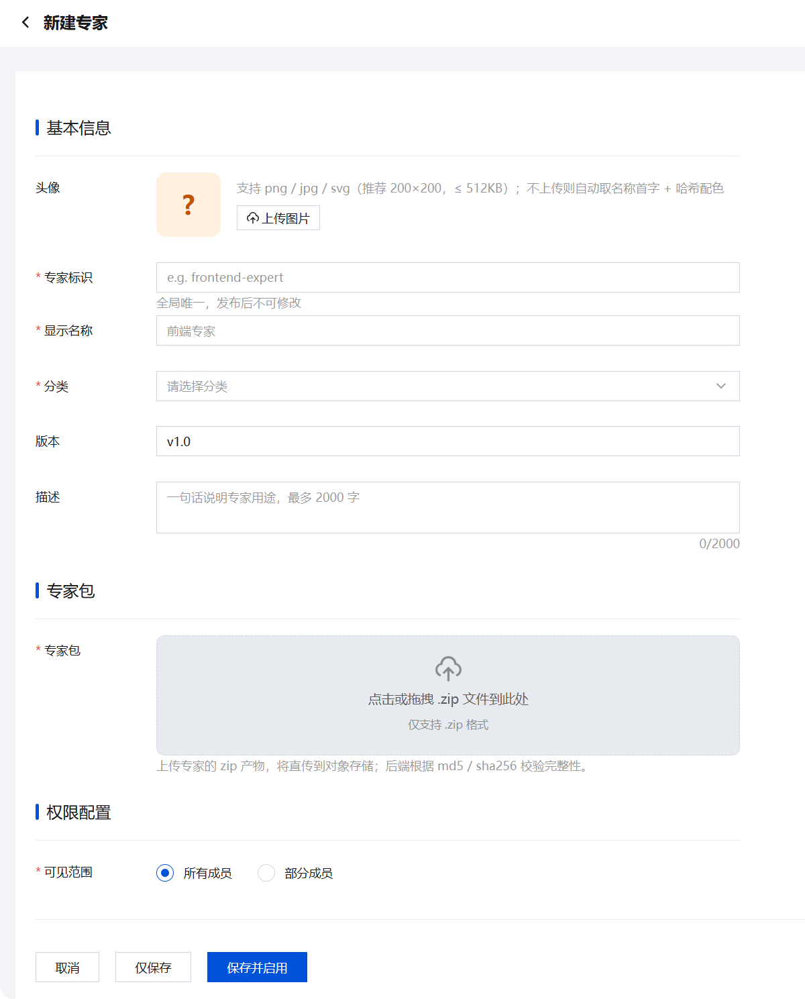
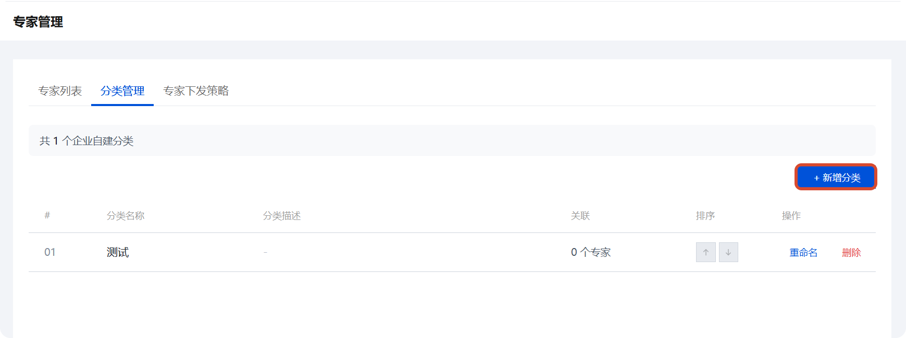
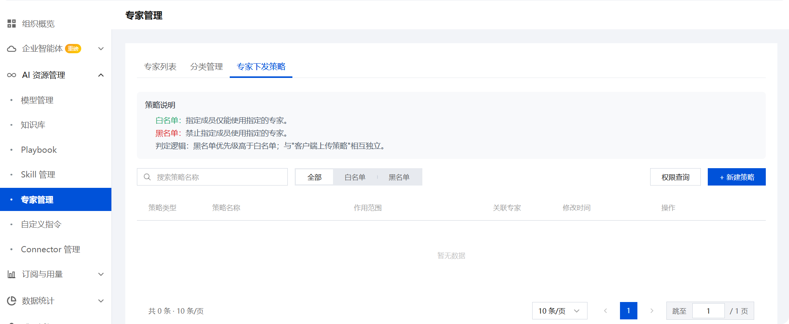
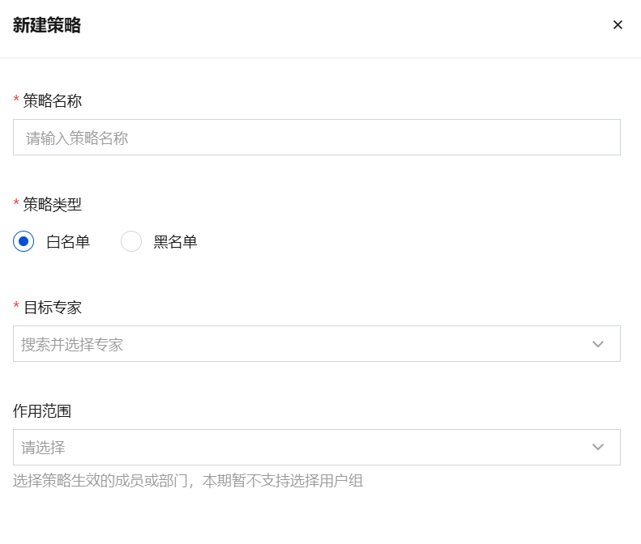

专家管理
专家管理为企业提供统一的 CodeBuddy / WorkBuddy 专家资源管理能力。通过专家管理，企业管理员可以上传自定义专家、组织分类目录、并精确控制成员对专家的使用权限。
专家分为两种来源：
| 来源 | 说明 |
|---|---|
| 企业自建 | 由企业管理员上传和维护的自定义专家 |
| 内置市场 | 平台提供的预置专家，开箱即用 |
专家列表
专家列表是专家管理的入口，提供对所有可用专家的统一查看和管理。
浏览与搜索
在「专家列表」标签页中，你可以查看当前企业可用的所有专家。列表展示以下字段：
| 字段 | 说明 |
|---|---|
| 专家 | 专家的头像和显示名称 |
| 类型 | 专家的来源类型 |
| 职业 | 专家的职业领域 |
| 分类 | 专家所属的分类 |
| 版本 | 专家的当前版本号 |
| 状态 | 专家的发布状态 |
| 可见范围 | 企业内的可见该专家的成员范围 |
| 启用 | 专家的 启用/关闭 状态 |
使用顶部的搜索框可以按专家名称或专家标识快速定位专家。

上传企业专家
点击 + 上传企业专家 按钮进入新建专家流程。
基本信息配置
新建专家时，需要填写以下基本信息：
| 字段 | 是否必填 | 说明 |
|---|---|---|
| 头像 | 可选 | 支持 png / jpg / svg 格式，推荐尺寸 200×200，文件大小 ≤ 512KB；未上传时将自动生成默认头像 |
| 专家标识 | 必填 | 专家的全局唯一标识符，格式如 frontend-expert，发布后不可修改 |
| 显示名称 | 必填 | 专家在界面中展示的名称 |
| 分类 | 必填 | 选择专家所属的分类，便于组织和检索 |
| 版本 | 可选 | 专家版本号，默认为 v1.0 |
| 描述 | 可选 | 一句话说明专家用途，最多 2000 字 |
提示
专家标识在创建后不可修改，建议采用语义化命名，如 code-reviewer、data-analyst。

上传专家包
专家包是专家能力的核心载体，以 .zip 格式上传。
要求与限制
- 仅支持
.zip格式文件 - 上传后系统将通过 MD5 / SHA256 校验文件的完整性
- 专家包将直接传输至对象存储，确保安全性和可靠性
配置权限范围
权限配置决定哪些成员可以使用该专家：
| 选项 | 说明 |
|---|---|
| 所有成员 | 企业内所有成员均可使用该专家 |
| 部分成员 | 仅指定的成员或部门可使用该专家 |
完成配置后：
- 点击仅保存保存草稿，专家处于未启用状态
- 点击保存并启用立即发布专家，成员可开始使用
分类管理
分类管理帮助你将专家按领域或用途进行组织，提升企业市场中的可发现性。
在分类管理标签页中，你可以查看和管理所有企业自建分类。
创建分类
点击 + 新增分类 按钮打开创建弹窗：
| 字段 | 是否必填 | 说明 |
|---|---|---|
| 分类名称 | 必填 | 分类在客户端「企业市场」中的显示名称，建议简短清晰，最多 20 个字符 |
| 分类描述 | 可选 | 仅企业管理员可见的内部备注，用于标识分类用途，最多 500 字 |
| 排序位置 | 必填 | 选择「追加到末尾」或「置顶到首位」，决定分类在企业市场中的展示顺序 |

管理现有分类
分类列表展示以下信息：
| 字段 | 说明 |
|---|---|
| # | 分类序号 |
| 分类名称 | 分类的显示名称 |
| 分类描述 | 内部备注描述 |
| 关联 | 该分类下关联的专家数量 |
| 排序 | 当前排序位置 |
| 操作 | 重命名和删除操作 |
专家下发策略
专家下发策略允许你精细控制成员对专家的访问权限，实现差异化的权限管理。
在专家下发策略标签页中，你可以创建和管理权限策略。
策略类型
系统支持两种策略类型：
| 策略类型 | 效果 | 适用场景 |
|---|---|---|
| 白名单 | 仅允许指定的成员使用目标专家 | 向特定团队开放敏感专家 |
| 黑名单 | 禁止指定的成员使用目标专家 | 限制某些角色访问特定资源 |
优先级规则： 当同一专家同时存在白名单和黑名单策略时，黑名单优先级高于白名单。即被黑名单禁止的用户无法通过白名单获得访问权限。

创建策略
点击 + 新建策略 按钮，配置以下参数：
| 字段 | 是否必填 | 说明 |
|---|---|---|
| 策略名称 | 必填 | 策略的唯一标识名称 |
| 策略类型 | 必填 | 选择白名单或黑名单 |
| 目标专家 | 必填 | 选择本策略作用的专家，支持多选 |
| 作用范围 | 必填 | 选择策略生效的成员或部门 |

查询与管理
策略列表提供以下筛选和查询能力：
- 按策略名称搜索
- 按策略类型筛选（全部 / 白名单 / 黑名单）
- 查看作用范围、关联专家、修改时间等信息
- 通过权限查询快速查看某成员对某专家的最终访问权限
- 在操作中查询策略的作用范围和目标专家；支持编辑修改策略配置
注意事项与重点提示
信息收集与使用
| 收集项 | 类型 | 用途 |
|---|---|---|
| 企业账号信息（登录凭据） | 必要 | 登录企业管理后台，进行专家的上传、配置和管理 |
| 专家包文件内容（指令、工具定义、领域知识） | 必要 | 构建企业专家的核心能力和行为模式 |
| 专家标识（全局唯一 ID） | 必要 | 用于系统内部引用和客户端调用，创建后不可修改 |
| 分类名称与排序配置 | 必要 | 组织专家在企业市场中的展示结构，提升可发现性 |
| 下发策略配置（成员/部门选择） | 必要 | 精细控制不同成员对专家的访问和使用权限 |
| 头像文件（可选） | 非必要 | 仅在管理员主动为专家配置头像时上传 |
类型判定标准：
- 「必要」：创建和管理企业专家时必须提供的信息（如企业账号、专家包、标识、分类、权限配置）
- 「非必要」：仅在管理员主动触达可选功能时才涉及的数据（如专家头像）
权限边界
- 企业自建专家的可见范围由管理员在创建时设定，可选择「所有成员」或「部分成员」
- 内置市场专家由平台提供，开箱即用，不受企业下发策略约束
- 黑名单优先级高于白名单，当同一成员同时命中两种策略时以黑名单为准
- 专家的启用/关闭状态独立于下发策略，关闭后的专家所有成员均无法使用
安全提示
- 专家标识在创建后不可修改，建议采用语义化命名（如
code-reviewer、data-analyst），避免使用临时或含义模糊的标识 - 建议对涉及敏感数据或高风险操作的专家配置白名单策略，限定使用范围
- 不再使用的专家请及时停用或删除，并同步清理关联的下发策略
积分消耗提醒
专家的浏览、上传和管理不消耗积分；成员在客户端中使用专家进行对话时，由客户端根据任务量和模型调用消耗相应积分。
第三方共享
- 企业自建专家的内容和能力由企业管理和控制，不会共享给平台外第三方
- 内置市场专家由平台提供和维护，遵循平台的数据管理策略
- 专家的外部服务调用能力取决于专家包内的配置，不在企业管理范围内
免责声明
- 企业自建专家的内容准确性、安全性和合规性由上传者负责，客户端不对专家行为输出承担法律和技术责任
- 内置市场专家由平台维护，其内容的时效性和准确性取决于平台更新策略
- 专家在对话中的输出内容仅供参考，关键决策请结合实际业务情况验证
使用建议
- 专家标识创建后不可修改，建议在创建前确认命名规范并留档，确保团队内命名一致性
- 下发策略配置完成后建议使用「权限查询」功能验证结果，确保目标成员和白名单/黑名单配置的预期一致
- 定期检查已启用的专家列表和企业市场中的展示状态，及时下架过期或低使用率的专家，保持企业市场的干净和高效